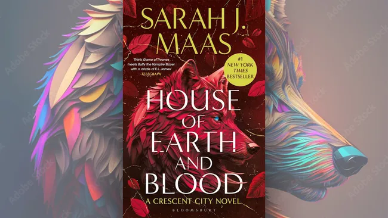
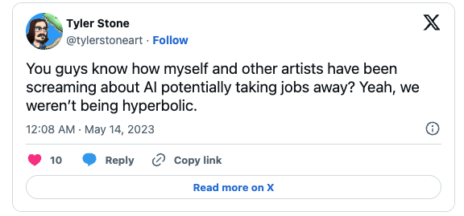
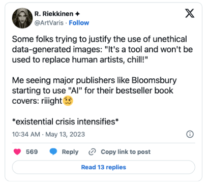
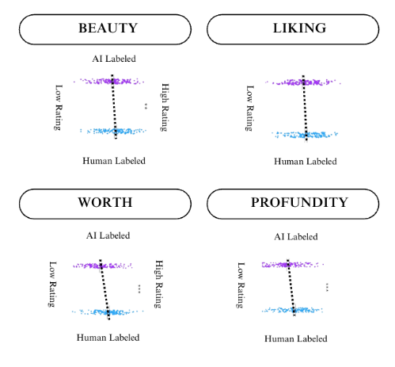
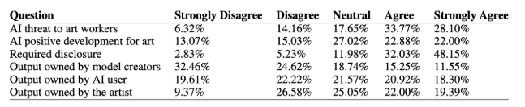
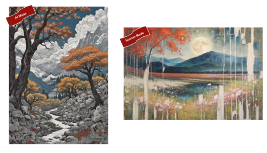
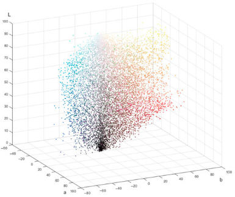
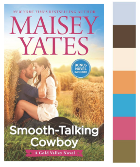

Artificial intelligence is a booming industry that is reaching a multitude of fields. One field that AI has made a huge appearance in is publications, but not in the way most people may first think. Artificial intelligence is slowly but surely fooling a lot of users, and AI-created book covers are becoming a very interesting phenomenon that readers are beginning to notice. The first thing readers interact with when picking out a book to read is the cover that the author has created themselves or found an artist that is important to them. This research highlights how AI images can mislead and confuse users and consumers, pointing out that while AI is a powerful tool, presenting its creations as human-created is both unethical and misleading.
Readers of fantasy have recently been shown an AI cover that has become incredibly controversial very quickly. Sarah J. Maas is an incredibly popular artist among the reading community, mainly known for A Court of Thorns and Roses. The UK edition of a book called A House of Earth and Blood in the Crescent City Series has recently come under fire for its AI cover republish of the popular book originally released in March of 2020. On Twitter (now referred to as X) there has been an extreme amount of discourse of how unethical this cover is to artists and the book's viewers (John, 2023).



This fiasco prompted a broader conversation about the unethical foundations of AI-generated content, particularly in media and publishing, where authenticity, authorial ownership, and transparency are essential values being progressively eroded by emerging technologies. While AI-generated book covers are rapidly growing more popular in the publishing industry, they have drawn equal-level indignation from both public readers and professional artists, revealing deep ethical concerns; however, by working with open design practices and ethical algorithmic best practices, AI can be used in creative fields without suppressing human creativity.
This section will review an array of research that has already been done on the basis of artificial intelligence in accordance with public and professional opinion. Following this section will be a replication of study one on public opinion.
Artificial intelligence has gained increasing popularity in mainstream culture, especially in the "AI Portrait" hype of 2023 (TLVTech, 2025). Not only has this increased popularity, exposing AI-generated content to a larger audience, but it has also made possible public discussion and analysis. As more people engage with AI in artistic fields, such as art and book cover design, public opinion has grown louder, expressing concerns about authenticity, aesthetic value, and the morality of machines replicating human imagination.
"Humans versus AI: Whether and Why We Prefer Human-Created Compared to AI-Created Work," written by Lucas Bellaiche, Rohim Shahi, and Martin Harry Turpin, explores the concept of preference bias between AI-created and human-created artwork. The authors conducted multiple studies to examine how critically people evaluate these two different types of art. When introducing these ideas, they note that, in general, people tend to exhibit higher levels of distrust when they discover that artificial intelligence is involved in traditionally human-oriented domains. The authors used two primary methods to investigate their research question, which I will outline below.
The researchers randomly labeled all the AI artwork as either "Human-Created" or "AI-Created." They then showed the images to 150 viewers, who rated each image on a 1-to-5 scale for four criteria: Liking, Beauty, Profundity, and Worth. In this initial study, there was a clear bias against the "AI-Created" images, with "Human-Created" artwork much more favored. This finding suggests that authorship is a relevant concept to the way people criticize and appreciate artwork.
In their second study, the researchers were interested in knowing the specific reasons why "AI-created" photos were less well-liked. In addition to the original four reasons, they included a 1-to-5 rating scale for the additional factors of Emotion, Story, Meaning, Effort, and Time. The results of this study provided a more precise affirmation of the findings of Study One. Participants still preferred "Human-Created" art to a large extent, which continued to reinforce the idea that people associate human-created artwork with more meaning and effort, resulting in overall preference.

Bellaiche, Shahi, and Turpin's research suggests a strong human preference bias toward human-created versus AI-created works. From the two studies that they conducted, they demonstrate not only that people reject AI-made art but also that they also regard human-made art as more meaningful, richer in emotional content, and more labor-intensive. These findings have crucial visual-dependent industry ramifications, such as in publishing, where book covers represent the first exposure a reader experiences. If AI-designed covers are to be used, then there has to be transparency so that the trust continues with the readers. However, given the preference for human-created art, authors, artists, and developers should carefully consider the potential drawbacks of AI-generated covers. While AI can serve as a helpful tool in the creative process, the enduring value of human creativity remains a key factor in how art is received and appreciated.
Most professional artists view AI art as a threat to their career, as they argue that it undermines the value and creativity of human beings. There are, however, varying levels of knowledge and interpretation of what is AI art. These interpretations range from totally machine-created images to those that utilize AI as a tool for collaboration. This disparity in vision is one of the reasons that the debate rages on, with some seeing AI as an augmentation of artistic images.
“Foregrounding Artist Opinions: A Survey Study on Transparency, Ownership, and Fairness in AI Generative Art,” written by Justin Lovato, Jessica Zimmerman, Ian Smith, Peter Dodds, and James Karson, is a research paper that seeks to answer how artists perceive the rapid rise of generative artificial intelligence in the art industry. The researchers employ a survey approach to examine the perceptions of artists towards the likelihood of AI threats to their profession. The study is separated into two phases of sampling, surveying 768 people who identified themselves as artists. The topics were asked a series of questions, from "strongly disagree," "disagree," "neutral," "agree," to "strongly agree," providing a broad spectrum of opinions on the impact of AI in the art world.
Questions have been asked of the artists as part of the survey to determine their views regarding the role of generative artificial intelligence in the art world. The questions are designed to study matters of transparency, ownership, and fairness of AI-generated art. Such questions present a comprehensive view of what industry artists find ethical during the era of artificial intelligence. A very small number of artists view AI as a positive development in the art world, and those who do believe its use should be transparently disclosed.

Lovato's, Zimmerman's, Smith's, Dodds's, and Karson's research provides an insightful view of what artists perceive about the rapid expansion of generative artificial intelligence in the art market. Through their extensive survey, they offer the fears and the ethical dilemmas, as well as the advantages of AI art. The findings underscore the tension between AI as a creative tool and the threat it poses to traditional artistic professions, particularly in terms of ownership, transparency, and fairness. If artists believe that transparency regarding AI-generated book covers should be standard, then publishers and designers should ensure clear labeling to inform consumers about the origins of the artwork. By capturing a wide range of artist opinions, this study sheds light on the ongoing debate about AI’s role in art, revealing both skepticism and cautious optimism. With further development of AI, this result forms a worthwhile foundation for policy, ethics, and creative industries' future debates in a world that is becoming increasingly AI-embedded.
To gain a better understanding of how artificial intelligence (AI) is perceived, I conducted a replication of Study One from “Humans versus AI: Whether and Why We Prefer Human-Created Compared to AI-Created Work” by Lucas Bellaiche, Rohim Shahi, and Martin Harry Turpin. In this replication, I used convenience and snowball sampling to recruit twenty-six participants. Participants analyzed a total of twelve images, six labeled as human-created and six labeled as AI-created. All images were selected from ArtBreeder, an AI art generation platform. Participants evaluated and responded to questions through Google Forms. One major difference between the original study and this replication was that participants were not required to complete the seven-item Cognitive Reflection Test (CRT) (Frederick, 2005; Toplak et al., 2014). Instead, participants were asked to verify whether the image banner identified the work as AI-created or human-created for each image. For every image, participants rated their responses on a 1–5 scale across four criteria: liking, beauty, profundity, and worth. Participants were prompted with the following questions for each image:
1. Based on the label on the image, was this image created by a human or an artificial intelligence computer program?
2. How much do you like this image?
3. How beautiful/aesthetically pleasing is this image?
4. How profound or meaningful is this image?
5. How much money would this work be worth?
Refer to image six for an example of how participants were shown the AI-made versus human-made labeled pictures. Refer to Appendix B for the list of all images that were used in the survey.

Very similar to the findings of the study by Bellaiche et al., a clear preference was seen for the images labeled as having been created by humans, even though all of the images used in the study had been created using artificial intelligence. This again points to the idea that labeling had an impact on the perceptions of the participants about the artwork. If we look at the results as a whole, we can see that the lowest percentage of responses for the human-labeled images was 10.2%, and the highest was 10.8%, while the lowest percentage of responses for the AI-labeled images was 24.1%, and the highest was only 2.6%. Again, we can see that the participants were less likely to rate the images highly when they were told that the artwork was created using artificial intelligence and that the participants were more likely to rate the artwork highly when they were told that the artwork was created by a human.
As depicted in Table 1 below, the responses to the human-labeled images show a greater degree of clustering towards the mid-to-high scale values (ratings 3 and 4), indicating that the participants had a generally positive perception of the images. The responses to the lowest rating category (1) are also less frequent, indicating that the participants had a relatively lower negative perception of the artwork when it was assumed to be created by humans.
| 1 | 2 | 3 | 4 | 5 | |
|---|---|---|---|---|---|
| Liking | 18 | 38 | 43 | 39 | 24 |
| Beauty | 15 | 41 | 45 | 33 | 28 |
| Profundity | 20 | 45 | 43 | 59 | 36 |
| Worth | 13 | 42 | 54 | 37 | 16 |
| Percentage | 10.2% | 25.6% | 31.0% | 22.4% | 10.8% |
Contrary to the responses to the human-labeled images depicted in Table 1 above, the responses to the AI-labeled images depicted in Table 2 below show a greater degree of clustering towards the lower rating categories, specifically rating categories 1 and 2, and a very rare occurrence of the highest rating category (5). This suggests that the labeling of the artwork as having been created by an AI had a negative impact on the perceptions of the participants regarding the quality, depth, and value of the artwork. From the responses depicted in both tables above, it is clear that labeling artwork as having been created by humans is likely to result in a positive perception of the artwork, regardless of its true nature.
| 1 | 2 | 3 | 4 | 5 | |
|---|---|---|---|---|---|
| Liking | 29 | 39 | 50 | 38 | 6 |
| Beauty | 18 | 41 | 48 | 47 | 8 |
| Profundity | 59 | 64 | 31 | 8 | 0 |
| Worth | 50 | 63 | 38 | 8 | 3 |
| Percentage | 24.1% | 31.9% | 25.8% | 15.6% | 2.6% |
There are ethical ways to use artificial intelligence on the business side of creating book covers. Book covers are the first thing a reader sees, and the goal is to get them to buy the book. Authors want a captivating cover, and there are ways to achieve this without fully using AI to create a cover from scratch. "Using Machine Learning and Generative Intelligence in Book Cover Development," written by Nonna Kulishova and Sajek Daiva, is a research paper that discusses the impact that book covers have on the audience, including aspects such as color palettes and the layout of the cover. Their paper considers how Generative Artificial Intelligence (GAI) can enhance book cover appearances by optimizing the design to appeal to the audience.
The authors discuss three key methodologies when planning their research:
1. Determine the colors most commonly used in highly popular and current book covers.
2. Assess whether that color scheme is harmonious.
3. If the color scheme is not harmonious, determine how GAI can correct the layout.


Kulishova and Daiva stress the importance of book covers as the first thing audiences see, leaving a lasting impression on whether they decide to pick up the book to read. It is also important to note that, according to their research, different genres tend to have a typical color associated with them. They use GAI to establish what those typical color schemes are, allowing it to influence the designer's opinion of the book covers they are developing. For example, they run GAI on romance books from the years 2011–2023 and find that, although there is a wide array of associated colors, the color green is highly underrepresented. This allows the designer to select the most popular color that would attract the most attention.
This demonstrates how AI can be used ethically and in a research-based manner, enhancing the creative process without misleading the reader into believing the cover was entirely handcrafted. This approach positions generative AI as a collaborative tool rather than a shortcut, ensuring that its use supports developers rather than replacing human creativity. By integrating machine learning and generative intelligence, designers can develop visually compelling book covers that align with audience expectations while maintaining transparency and integrity within the publishing industry.
More broadly, this also reflects how artificial intelligence can be utilized responsibly and ethically, providing a balanced approach for those concerned about the rapid advancement of AI while still wanting to explore its potential. By positioning AI as an assistant rather than a replacement for creativity, this research highlights how technology can continue to enhance design processes without compromising openness and artistic expression. By analyzing color trends and harmony in design, GAI is a valuable asset for enhancing book cover art while preserving creative integrity. Their findings affirm the theory that AI should function as a collaborator, not a replacement, and aid designers in making informed decisions that align with audience needs.
In conclusion, more artificial intelligence penetration into the publishing industry, particularly book cover art, has triggered significant discussions regarding ethics, transparency, and artistic integrity. The evolution of sophisticated AI technology makes the system even have the ability to create good-looking pieces similar to human craftsmanship. Nevertheless, there has not been this trend without any resistance. The public outcry against AI-created book cover art for Sarah J. Maas is a great example, showing how quickly artists and readers alike reject art that they perceive as misleading or without the emotional resonance of the human touch. Confirmation for this sentiment has been provided in Bellaiche, Shahi, and Turpin's study that proves people always prefer work of human origin due to perceived effort, meaning, and emotional worth. These findings affirm authorship and authenticity being significant, both to the artist and to viewers. The findings of the replication also support the study’s conclusions. Although all of the images used in the current study were designed using artificial intelligence, those that were categorized as having been made by a human were rated as having a more positive assessment across all categories of liking, beauty, depth, and worthiness. This further supports the idea that perceptions of authorship can impact an audience’s assessment of creative works.
Also, professional artists have raised very serious concerns over the fairness and long-term impacts of AI on creative industries. Lovato, Zimmerman, Smith, Dodds, and Karson's survey suggests that a majority of artists feel threatened by AI, particularly where there is no transparency and due credit. This is not a matter of job security but the fear that loses the values that govern art work: ownership, intentionality, and humanity. The adoption of AI without moral standards could actually redefine how we enjoy and engage with art. If AI-generated work continues to be offered up as human-produced, it will risk undermining creators' and consumers' trust along with devaluing the skill-building years that artists invest into their work.
However, this essay has also shown that AI does not have to be a negative force on the creative industries. Artificial intelligence, if used responsibly, can be a means to augment human creativity rather than replace it. As discussed in Kulishova and Daiva's paper, AI can be ethically integrated into the design process through data analysis and stylistic enhancement that still permits human decision-making. By using AI to inform design choices such as color harmony and visual composition rather than generating entire pieces independently, artists can maintain artistic integrity while still benefiting from technological innovation.
The future of book publishing with AI does not have to be one of strife and opposition. Instead, it can be a future of collaboration and transparency. Publishers, developers, and designers must adopt sound ethical principles that distinguish between totally AI-generated material and AI-augmented design. Unveiling the use of AI, fairly crediting collaborating artists, and respecting the work and identity of human artists are essential steps toward making a future where AI is a respected creative collaborator, not a silent substitute. If the industry embraces these principles, artificial intelligence can supplement traditional artistry, enhancing the design process without eroding the values that give art value. Ultimately, the argument regarding AI-generated book covers reflects wider cultural concerns about the role of technology in art. It leads us to ask what we value in art, not just visually but ethically. As technology evolves, and as this technology continues to do so, it is up to artists, consumers, and academics to ensure that creativity need not come at the cost of honesty, fairness, or humanity.
Artbreeder. (n.d.). Tools. https://www.artbreeder.com/tools
Bellaiche, L., Shahi, R., Turpin, M. H., et al. (2023). Humans versus AI: Whether and why we prefer human-created compared to AI-created artwork. Cognitive Research: Principles and Implications, 8, 42. https://doi.org/10.1186/s41235-023-00499-6
Damonza. (n.d.). What now? The legal and ethical use of AI in book cover design. https://damonza.com/the-legal-and-ethical-use-of-ai-in-book-cover-design/
Frederick, S. (2005). Cognitive reflection and decision making. Journal of Economic Perspectives, 19(4), 25–42. https://doi.org/10.1257/089533005775196732
John, D. (2023, May 16). This AI-generated book cover is causing controversy. Creative Bloq. https://www.creativebloq.com/news/ai-book-cover
Kulishova, N., & Daiva, S. (2025). Using machine learning and generative intelligence in book cover development. Journal of Imaging, 11(2), 46. https://doi.org/10.3390/jimaging11020046
Lovato, J., Zimmerman, J., Smith, I., Dodds, P., & Karson, J. (2024). Foregrounding artist opinions: A survey study on transparency, ownership, and fairness in AI generative art. arXiv. https://arxiv.org/abs/2401.15497
Murphy, D. (2022, October 14). Using AI for art, images, and book covers with Derek Murphy. The Creative Penn. https://www.thecreativepenn.com/2022/10/14/ai-generative-art-midjourney-dall-e/
Sigler, S. (2024, May 17). Is using AI art for books always wrong… or only sometimes? Empty Set Entertainment. https://scottsigler.com/blogs/siglerverse/ai-art-and-fiction
TLVTech. (2025, January 6). AI through time: From unknown to ubiquitous. https://www.tlvtech.io/post/ai-popularity-when
Toplak, M. E., West, R. F., & Stanovich, K. E. (2013). Assessing miserly information processing: An expansion of the Cognitive Reflection Test. Thinking & Reasoning, 20(2), 147–168. https://doi.org/10.1080/13546783.2013.844729
Weatherbed, J. (2023, May 15). Not even NYT bestsellers are safe from AI cover art. The Verge. https://www.theverge.com/2023/5/15/23724102/sarah-j-maas-ai-generated-book-cover-bloomsbury-house-of-earth-and-blood
GoogleForm Survey
Artificial Intelligence Created Images